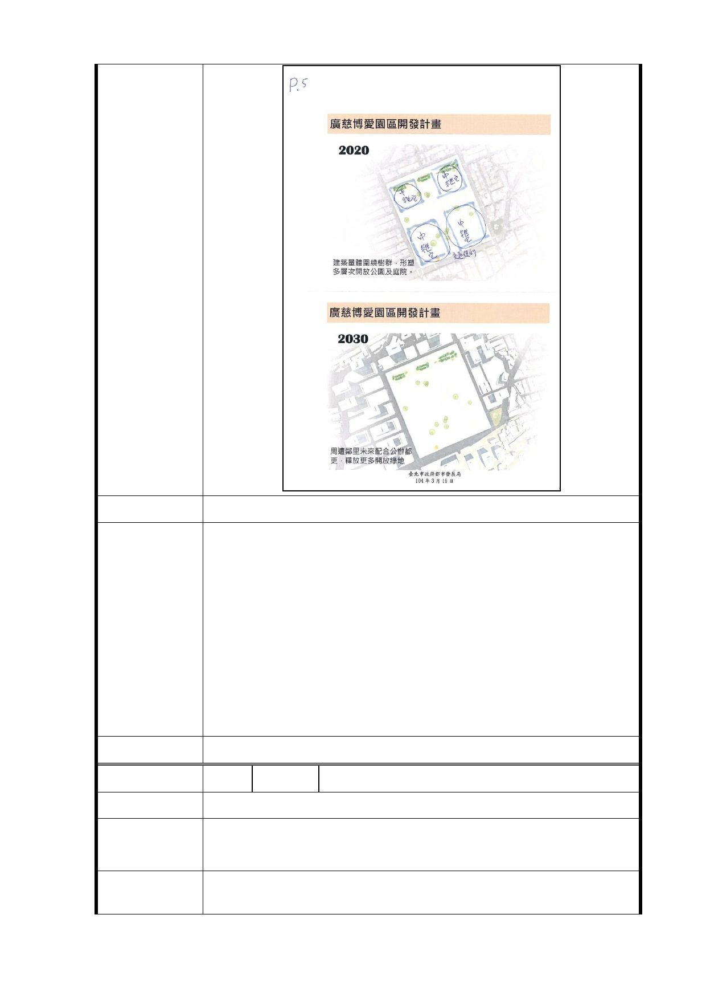

建議辦法
一、 本案係配合本府公共住宅興建策略，於考量地區發展
條件及公共設施容受力前提下，將原計畫商業區部分
容積挪作公共住宅使用，適度提高公共住宅戶數，並
透過設計手法及界面處理，兼顧都市景觀、公共住宅
市府回覆
品質及地區生活環境。
意 見 二、 公共開放空間部分如編號 1。
三、 依本府初步建築配置構想，行政中心、圖書分館等公
共行政資源配置於捷運出入口附近，俾利市民使用；
另為維護寧適之居住環境，公共住宅及社福設施則配
置於基地北側區位。
委 員 會 決 議 同編號 1
編 號 19 陳情人 吳○松
陳 情 理 由 本區可作觀光、文化交流的據點交通用。
本區的左上角請留一些小空地，作為觀光文化交流的公共措
建議辦法
施，或中間中北註明均可。
市 府 回 覆 一、 有關公共開放空間部分如編號 1。
意 見 二、 福德平宅部分同編號 10-1。
- 33 -